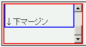

ある要素でoverflowプロパティにautoかscrollを指定してスクロールバーが表示されるとき、その中身の高さ計算が正しくない。最後のボックスの下ボーダーまでしか高さを確保せず、下マージンが消えてしまう。
<div style="width:10em; height:5em; overflow:auto; border:2px solid red;"> <div style="margin:2em 0; border:2px solid blue;"> ↑上マージン<br><br><br><br><br>↓下マージン </div> </div>
青色のボーダーのdiv要素の上下に2emのマージンを設定しています。
WinIE6.0での表示（標準モード）
N7.02での表示（標準モード）
このバグについては、Bugzilla-jp内の以下の項目も参照してください。
Netscape7.02、Mozilla1.4RC2で不具合の発生を確認しました。